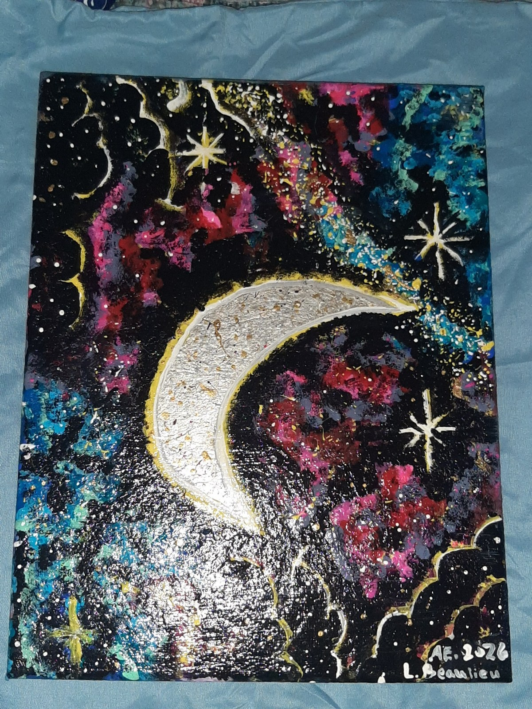
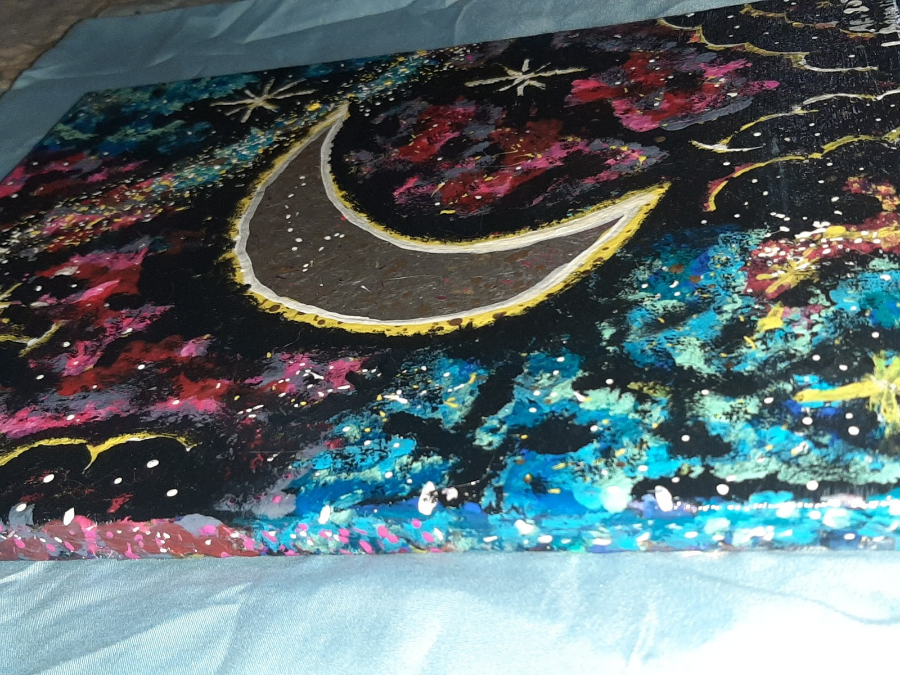
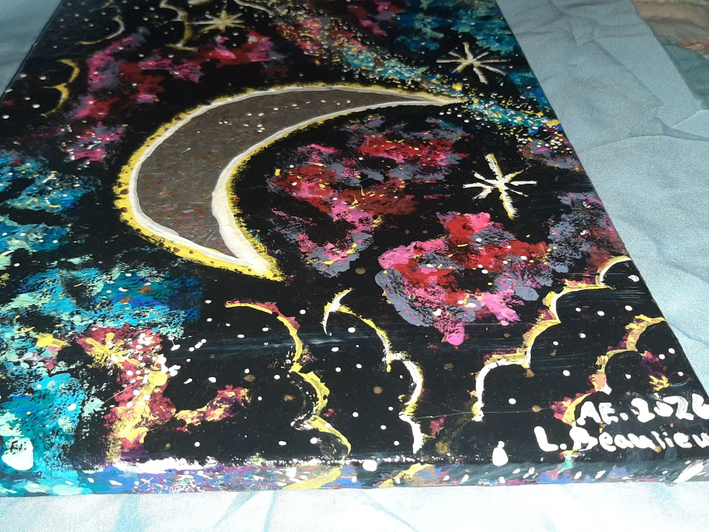
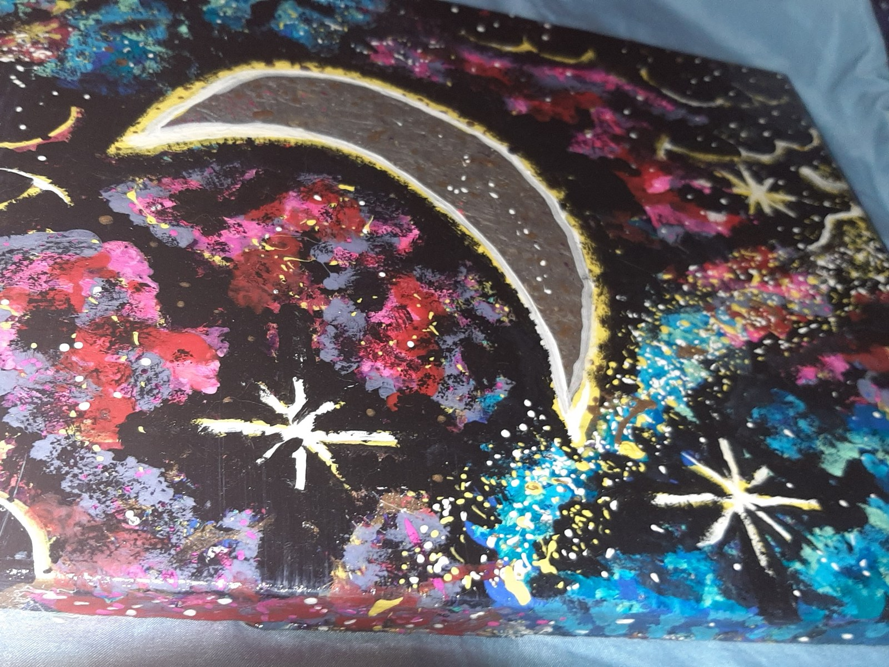
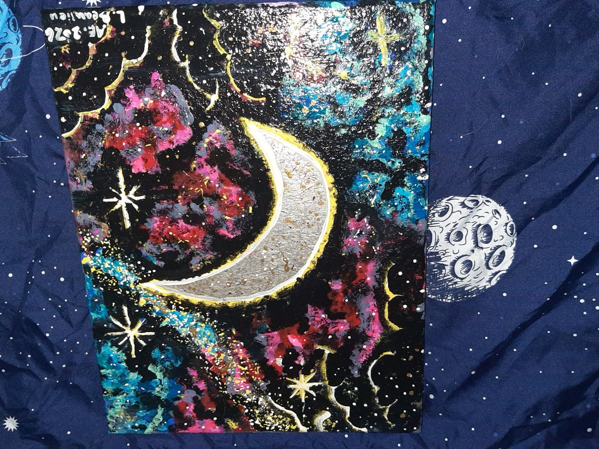
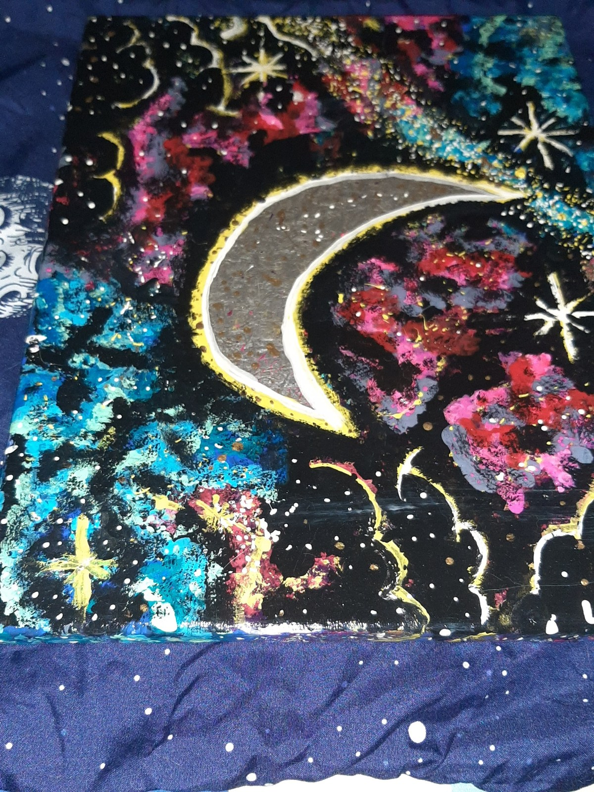

Celestial Drift







$80 CAD
Celestial Drift is a one-of-a-kind original mixed media painting inspired by the movement, mystery, and beauty of a moonlit night.
A luminous crescent moon anchors a richly layered cosmic landscape of deep blacks, electric blues, vibrant magentas, crimson, silver, and metallic gold.
Hand-painted stars, scattered highlights, textured details, and metallic accents create depth and movement throughout the piece, while the glossy sealed finish enhances the colours and catches the light beautifully.
Every detail was added by hand, making this a completely unique original—there will never be another exactly like it.
At 14 × 11 inches, Celestial Drift is an easy size for a bedroom, studio, reading nook, office, or gallery wall, while still making a bold statement.
| Title | Celestial Drift |
| Artist | Lissa Beaulieu |
| Year | 2026 |
| Size | 14 × 11 inches |
| Medium | Acrylic on canvas with silver leaf & metallic accents |
| Style | Celestial Abstract / Moonlit Mixed Media |
| Finish | Gloss sealed |
| Edition | Original 1/1 — one of a kind |
| Location | Made in Ontario, Canada |
Pickup / drop-off available in Thunder Bay, Ontario.
Canada-wide shipping available — shipping cost calculated separately.
If this listing is still active, Celestial Drift is still available.
Signed by the artist. Includes Certificate of Authenticity (printable).